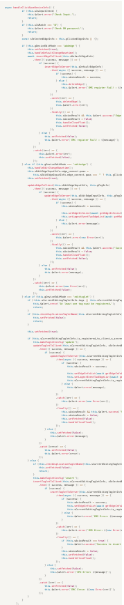
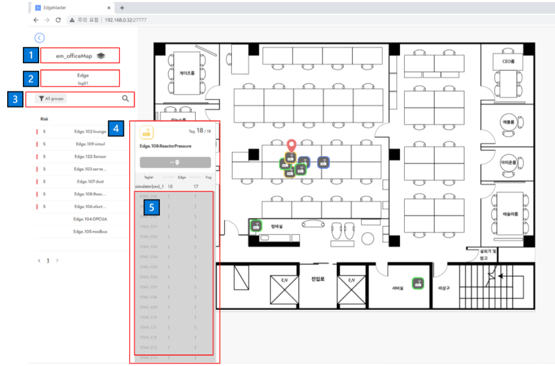

강남·판교에서 웹 엔지니어로 일하고 있습니다. 실무에서 주어진 문제를 구체적으로 어떤 기술을 사용해서 해결할 지를 고민하고 해결합니다.
경력 기술서
정규직 프론트엔드 엔지니어
2021. 01. 25 - 현재()
▼마크베이스 경력기술서 보기
센서 데이터 시각화 차트
사용자가 자유롭게 차트의 크기 및 배치 조작
막대, 텍스트, 선, 도넛형으로 종류 별로 차트 생성
그래프 구간을 확대해서 상세 데이터 보기
repository 코드 분석 및 기존 제품에 기능 반영 - 기여 100%
대표 제품인 edgemaster에 적용
기존 제품과 앞으로 개발하게 되는 제품에 배운 점 적용
기여도 : 프론트 엔드 개발 70%
회사의 대표 웹 솔루션 제품입니다. edgemaster는 공장 기계에 부착된 센서(edge)를 제어·이상 감지·데이터 수집·데이터 시각화 기능을 제공하는 웹 솔루션입니다.
센서를 웹 솔루션 서버에 등록/제거
센서 이상 감지 상황 표시, 알림 및 이메일 전송
센서 데이터 시각화 차트
날짜 기간/센서 타입/데이터 타입 조건 선택으로 리포트 조회 페이지
센서 데이터 리포트를 위한 차트 페이지
센서 장비 등록 위치를 map(이미지)에 마킹 및 조회
팀 내 기술 공유 -제품 코드 개선을 위해 학습한 내용을 문서로 정리 및 팀 내에 발표로 공유.
1.5 버전 작업 중 - 제품 유지보수 가능한 코드 개발로 요구사항 및 개선에 대한 개발 생산성 증가.
1.5 버전 작업 중 - 제품 UI 기능 개선으로 사용성 증가.
21년 4월 제품 1.0 버전 출시 후, 2건 납품.
21년 4월 제품 1.0 버전 출시.
함수 하나가 172줄이나 되서 가독성이 떨이지고, depth가 깊음. 함수 안에서 조건 별로 처리되는 기능이 달라서 기능을 찾기가 어려움. → 유지보수가 힘듬.
👆 함수 한 개.
1함수 1기능으로 분리했습니다.
save를 누르면 실행되는 함수가 짧고, depth가 없어서 개발자가 딱 봤을 때, 고칠만한 코드로 보이고, 읽기가 쉬워짐. 함수가 딱 실행하는 기능만 갖춰지게 됨.
addEdge() { // 👈 분리된 함수
//...
},
editEdge() { // 👈 분리된 함수
//...
},
editTaglet() { // 👈 분리된 함수
//...
},
async handleClickSaveDeviceInfo() {
if (this.sIsMatch === 'N') {
this.$alert.error('Check DB password.');
return;
}
if (this.gDeviceEditMode === 'addedge') {
this.addEdge();
} else if (this.gDeviceEditMode === 'editedge') {
this.editEdge();
} else if (this.gDeviceEditMode === 'edittaglet') {
this.editTaglet();
}
},
Vue-CLI의 기본 명령어 실행에 따라서 환경변수가 설정되는 스펙 사용. 참고 문서
//npm run dev
process.env.NODE_ENV = 'development'
//npm run build
process.env.NODE_ENV = 'production'
👆 코드베이스에 IP가 들어가지 않게 env파일을 만들어서 변수를 호출해서 사용하도록 했습니다.

👆 제가 수정 후, 커밋 전에 찍은 스샷입니다.
(사용자 로그인이 필요한 제품이 아니여서 로그인을 하면, 브라우저 localstorage에만 저장되는 걸로 로그인 기능을 실행합니다.)
📄 개발 모드와 빌드 모드 구분으로 ems 호스트 정보 자동 설정 방법.pdf
📄 Vue-CLI 환경변수 설정으로 코드 베이스에서 IP 분리하기.pdf
팀 내 공유 문서 📄 [FE] Javascript 문서화 방법.pdf

text-overflow
list-overflow
text-overflow
{
text-overflow: "ellipsis";
overflow: "hidden";
white-space: "nowrap";
}
list-overflow
{
overflow: "scroll";
height: 400px;
}
아래 사진에 번호를 매긴 빨간 박스 요소들이 개선이 필요한 요소들이었습니다.
1️⃣ select box입니다. 전혀 사용자가 보기에는 select box가 아니라고 생각되는 UI였습니다. 그래서 select box인 것을 표시하기 위해서 Vuetify의 selectbox로 교체했습니다.
2️⃣ 하드코딩 되어있는 요소였습니다. 사용자가 알 필요 없는 정보였습니다.
3️⃣ 사용자 입장에서 버튼을 눌러서 원하는 그룹을 필터해서 보고 싶어하지, 직접 검색하는 경우는 드뭅니다. 그런 목적의 기능이기 때문에 group 필더를 더 사용성이 좋게 개선했습니다. 버튼 영역을 넓히고, 모션을 주어서 펼쳐지도록 수정했습니다. 원래는 그룹을 선택하면, 선택한 그룹 중 가장 앞에 있는 그룹 이름만 보여줬습니다. 본부장님께 UI를 개선해서 보여드렸더니, group button에 선택한 그룹들이 모두 표시가 되었으면 좋겠다고 하는 의견을 제안하셨고, 저는 수용해서 그에 맞게 개선했습니다.
4️⃣ 목록을 누르면 카드가 모션없이 띡 등장했습니다. 모션이 있으면, 사용자가 집중하기 좋을 거라 생각했습니다.
5️⃣ 정해진 max-height 없이 목록에 있는 아이템이 전부 출력되었습니다. overflow에 대한 작업이 전혀 되어있지 않아서 사용자의 사용성을 크게 저해한다고 생각했습니다. max-height를 주고, max-height를 넘어갈 정도로 아이템이 많을 경우에는 overflow scroll을 적용했습니다. 그리고, 리스트를 펼치는 버튼이 누르면 리스트가 펼쳐지지만, 다시 버튼을 눌렀을 때, 닫히지 않았습니다. 사용자에게 불편함을 줄 수 있어서, toggle로 open/close를 구현했습니다.
1️⃣ : 스타일 변경
2️⃣ : 단순 코드 삭제
3️⃣ : 필터 기능 구현
4️⃣ : transition 진입 진출 태그를 사용
<template>
<transition name="fade" mode="out-in">
<div class="MapUnit_float" v-if="cIsClicked && gClickedEdgeId === pClickedEdgeInfo.id">
<template v-if="cUnitType === 'edge'">
<EdgeCard :pIsMapUnitEdgeCard="true" :pCardSize="120" :pInfo="pClickedEdgeInfo" :pLocationId="pInfo.location_id" @eInitStatus="eInitStatus" />
</template>
<template v-else-if="cUnitType === 'tag'">
<TagInfo :pClickedTagInfo="pClickedTagInfo" :pLocationId="pInfo.location_id" :pIsPinned="true" :pIsMapUnitEdgeCard="true" @eInitStatus="eInitStatus" />
</template>
</div>
</transition>
</template>
<style>
.fade-enter-active {
transition: all 0.3s;
}
.fade-leave-active {
transition: all 0.2s cubic-bezier(1, 0.5, 0.8, 1);
}
.fade-enter, .fade-leave-to
/* .slide-fade-leave-active below version 2.1.8 */ {
transform: translateX(-10px);
opacity: 0;
}
.tag-fade-enter-active {
transition: all 0.3s;
}
.tag-fade-enter, .tag-fade-leave-to
/* .slide-fade-leave-active below version 2.1.8 */ {
transform: translateX(10px);
opacity: 0;
}
.tag-fade-leave-active {
transition: all 0.1s cubic-bezier(1, 0.5, 0.8, 1);
}
</style >
5️⃣ : 요소에 height와 overflow:scroll을 설정
👇 아래의 사례는 제가 제품의 버그를 발견하고 수정하는 과정을 풀이한 것입니다.
제가 문제를 어떻게 접근하고 단계적으로 해결해 나가는지 확인할 수 있습니다.
인턴 계약직 웹 풀스택 엔지니어
2020. 11. 17 - 2021. 01. 04(2M)
▼브랜디 경력기술서 보기
2020. 11. 17 - 2021. 01. 04(2M)
과제 수행 및 코드 리뷰.
MySQL 쿼리 작성해서 데이터 추출.
정규직 솔루션 구축 및 웹 애플리케이션 개발 엔지니어
2019. 04. 22 - 2020. 09. 21(1Y5M)
▼와이즈넛 경력기술서 보기
기간: 2019. 11 - 2020. 12(1M)
고객 서버에 원격으로 접근해서 Window Server에서 작업했습니다. MySQL을 설치하고, 회사 솔루션 제품도 설치했습니다.
강원도의 대학 및 기관에서 채용 게시판을 솔루션을 사용해서 크롤링하고 그 데이터를 DB에 저장시키는 일을 담당했었습니다.
고객의 크롤링을 요구했던 모든 사이트가 완벽하게 수집되지 않았습니다.
https의 수집이 안 되는 사이트들은 브라우저 설정에서 팝업 신뢰할 수 있는 사이트로 등록하고 수집하는 방식으로 문제를 해결할 수 있었습니다.
솔루션 버그는 회사 연구소에 문의해서 해결했습니다.
강원도의 각 기관에서 게시판에 채용정보를 크롤링해서 강원도 일자리 홈페이지에 데이터를 제공하는 서버와 프로그램을 구축해서 납품할 수 있었습니다.
기간: 2020. 03 - 2020. 05(3M)
챗봇 백오피스 기능 개발.
JQuery를 사용해서 CRUD 처리를 위한 Ajax 개발 작업을 진행했습니다.
관리자가 엑셀 데이터 업로드 및 다운로드 할 수 있게 기능을 개발했습니다.
기간: 2019. 05 - 2020. 09(1Y4M)
1~2달 단위로 공공기관 프로젝트 업무 수행
회사 솔루션 검색 엔진 구축 및 DB에서 검색 데이터 수집
웹 애플리케이션 검색 페이지 개발과 검색 요청을 처리하는 rest API기능 구현
쿼리를 만들거나 상주 개발자로부터 검색 데이터를 출력할 수 있는 쿼리를 받아서 검색솔루션이 주기적으로 쿼리를 실행해서 검색솔루션이 검색어를 색인하도록 리눅스 또는 윈도우 서버에 검색 솔루션을 구축합니다.
웹 작업은 공공기관의 검색페이지를 개발했습니다. 공공기관이여서, 주로 spring 프레임워크로 되어 있었고, publisher로부터 마크업과 style작업된 파일받아서, 거기에 검색 데이터를 rest api를 통해서 받아와서 페이지에 반영해 주는 웹 작업을 수행했습니다.
프론트엔드 개발자로 일하시면서 문제 해결 사례
제품 버그를 수정하면서 시간이 많이 걸렸습니다.
시간이 많이 걸린 것이 수정할 부분이 많아서 걸린 것이 아니었습니다. 코드 분석에 시간이 많이 걸렸습니다.
코드에서 기능을 찾기에 시간이 많이 걸렸습니다.
하나의 컴포넌트 파일의 코드 길이가 2000줄이 넘었습니다. 하나의 컴포넌트 파일에 feature가 4개나 됐습니다.
여기 저기서 막 가져다 사용하는 변수와 함수들이 있었습니다. 'sIsCheck', 'sIsValid' 그리고 'sCurrentTagletInfo'처럼 변수나 함수 이름까지 의도없이 네이밍되어 있어서 이 변수와 함수의 의도를 파악하기가 어려웠습니다.
함수의 기능이 여러 개가 뭉쳐있었습니다.
저만 잘 작성하면 되는 문제가 아니라고 생각했습니다.
저희 팀은 가이드나 본보기가 될 시니어 개발자와 일하고 있지 않기 때문에 스스로 공부하고 문제점을 개선하지 않으면 안 되는 환경입니다. 그래서, 서로 문제 해결 방법이나 좋은 방법에 대한 공유가 필수라고 생각했습니다. 이런 취지에서 팀원들에게 좀 더 좋은 코드를 작성해야 하는 이유를 설명하기 위해서,처음에 이 코드를 작성한 팀원과 팀장님에게 버그 수정과 코드 수정을 한 코드를 merge받을 겸, 코드 리뷰를 진행했습니다.
의도를 알 수 없는 변수명과 함수명 수정이 시급했습니다.
Javascript의 함수를 잘못 사용해서 발생한 버그를 리뷰했습니다.
제가 개발하는 웹은 [웹(Front) - 웹 서버(api 요청,응답 처리) - 센서 장비(센서 데이터 저장)]로 구성되어 있습니다. 이 웹의 기능 중에는 다수의 센서 장비에 자동으로 데이터베이스와 장비에 필요한 프로그램 패키지를 자동으로 설치하고, 세팅하는 기능이 있습니다.
HTML(5), CSS, Javascript(최소 ES5)를 사용해서 개발 가능합니다.
CSS만으로 처리할 수 있는 기능을 Javascript로 처리하지 않습니다. CSS를 우선적으로 적용합니다.
CSS transition을 사용해서 Javascript의 표현을 부드럽게 할 수 있습니다.
CSS에서 가상요소 '::after'와 '::before'를 사용해서 툴팁을 만들 수 있습니다.
// 👇 툴팁에 사용한 코드
.tooltip {
color: #00b894;
cursor: pointer;
position: relative;
}
.tooltip::after {
--scale: 0;
position: absolute;
top: 30px;
left: -6px;
background-color: #00b894;
width: 40px;
text-align: center;
border-radius: 10px;
content: '툴팁';
color: #222;
padding: 5px;
transform: scale(var(--scale));
transform-origin: top;
transition: 0.4s transform;
}
.tooltip:hover::after {
--scale: 1;
}
[CSS]이미지 hover 설정 및 ::after에 contents 전달
CSS preprocessor 설정하고 사용할 수 있습니다.
CSS를 사용해서 HTML 요소를 원하는 위치에 배치하고 화면에 텍스트를 스타일을 사용해서 자유롭게 표시할 수 있습니다.
용도에 필요한 로직을 Javascript로 작성할 수 있습니다.
Vanilla Javascript로 웹에서 필요한 기능을 개발할 수 있습니다.
HTTP, RESTful API통신을 위한 비동기 처리를 할 수 있습니다.
Javascript의 이벤트 처리를 적절히 할 수 있습니다.
[Javascript] Web 이벤트 전파 막는 방법과 프론트 개발자가 반드시 알아야 하는 개념.Vue.js의 Virtual DOM과 렌더링 원리와 라이프 사이클 훅에 대해서 이해하고 실무에서 훅이 실행되는 시점에 맞는 로직을 작성할 수 있습니다.
Vue.js 라이프 사이클.pdf 👈 회사 팀 내 공유 문서
Vuetify 템플릿을 사용해서 회사 제품을 개발한 경험이 있습니다.
구조적으로 Vue 애플리케이션 구조를 구성할 수 있습니다.
컴포넌트 간 데이터 통신 및 이벤트 전달 props, emit 사용.
vuex, mixin을 사용할 수 있습니다.
디렉티브 요소를 정확히 이해하고 디렉티브에 붙는 수식어에 대한 사용도 능숙합니다.
진입/진출에 〈transition〉을 사용해서 움직이는 효과를 줄 수 있습니다.
VSCode
Prettier, EsLint
Webpack, Babel
GitHub, Gitlab
Java
Spring Boot
JPA
JUnit5
EC2
LightSail
RDS
MySQL
PostgreSQL
Work Experience
The Big Challenge
Skills
Contact